アムザ → なんば → 大阪駅前 → 大淀中一丁目 → スカイビル
8号と41号を使い、梅田駅からの長い徒歩を避ける。バス待ちを含め70分を確保。9:30に間に合う便をGoogle Mapsで確認して出発。荷物預かりは宿で確認。
市バス8号なんば → 大阪駅前
市バス41号大阪駅前 → 大淀中一丁目（榎木橋行）
徒歩大淀中一丁目 → スカイビル：約4〜5分の目安
この移動をYahoo!乗換で調べる ↗Google Mapsで経路 ↗OSAKA · YOUR THREE DAYS · 2026
大人1人・アムザ拠点。10/6火・7水は大阪周遊パス、8木は自然史博物館を自費で、梅田のディズニーストアと本屋へ。
2026/10/2の公式公開情報を確認した、当日の時間割。
0 アムザ｜宿泊拠点・概要を見る Google Maps ↗公式サイト ↗
8号と41号を使い、梅田駅からの長い徒歩を避ける。バス待ちを含め70分を確保。9:30に間に合う便をGoogle Mapsで確認して出発。荷物預かりは宿で確認。
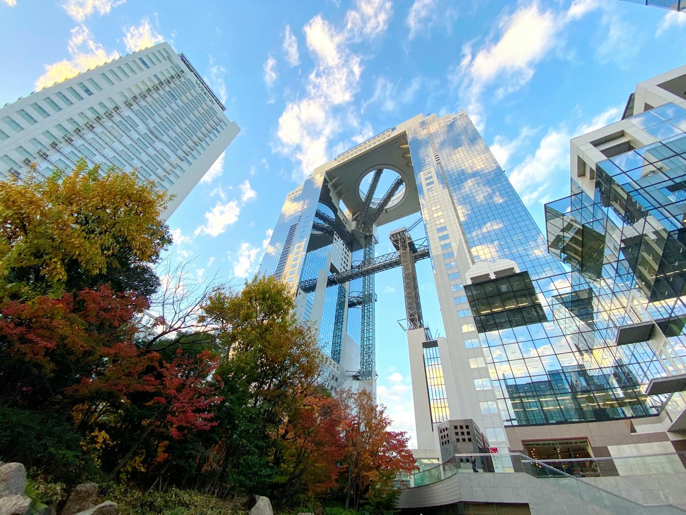
パスでの入場は15時まで。朝一番に50分。梅田駅から長く歩かず、41号の大淀中一丁目から短い徒歩で向かう。
朝、低い雲や霞で遠くが見えにくく、昼のほうが晴れそうならこちら。下の時間割はそのまま使い、午前〜午後前半だけ次の順に入れ替える。
移動時間は目安。昼食は移動の合間に短く取り、ロールス・ロイスを見送れば食事と遅れの余裕を作れる。昼も雲が厚ければ、晴れを待ち続けず予定どおり進む。
なんばへ直行する場合：大淀中一丁目 → 41号〈大阪駅前行〉→ 大阪駅前 → 8号〈なんば行〉→ なんば。6・7日は周遊パス対象。
Yahoo!乗換 ↗Google Mapsで経路 ↗地下鉄梅田駅まで戻らず、バス41号→8号で淀屋橋へ。乗換待ち込み50分の目安。遅れたらロールス・ロイスの立寄りを短縮・見送り。

淀屋橋・道修町4-1-1。火曜10–18時、水曜定休。2025年移転時の公式発表は展示4台のスペース＋色・革・木材などのビスポーク展示。見学のみの来店条件・予約要否・当日の展示車は未確認。店頭で相談し、見学できなければ次へ。周遊パス対象外。
移動後、13時ごろ〜13:25を交換・待機に充てる。周遊パスQRを提示し、20:30希望の時間指定券を受け取る。当日のみ受付・電話予約不可。窓口はドン・キホーテ道頓堀店の川側入口の東隣。満席なら21時等を相談。早く完売する場合もあり、この時刻での確保は保証されない。
地下鉄の本町乗換を避け、60号〈天保山行〉で移動。乗り場までの徒歩・バス待ち込み65分の枠。道路混雑で遅れたらGLIONを短縮し、16時の船を優先。
30分は徒歩の時間ではなく、停留所への徒歩・バス待ち・乗車・降車後の徒歩を含む移動枠。GLION近くの築港中学校から72号〈天保山行〉に乗り、天保山ハーバービレッジで下車。そこから海遊館西側のサンタマリア乗り場へ。15:45までの到着を優先。72号の待ちが長い場合は築港一丁目から60・88号〈天保山行〉、さらに時間が迫ればタクシーで「海遊館のサンタマリア乗り場へ」と伝える。
周遊パス公式は直接乗り場でQR提示、チケットカウンターでの交換不要。出航15分前到着が条件なので、計画は30分前到着を目標。16時便は未確保。軽食は集合を遅らせず、現地の飲食ルールに従う。
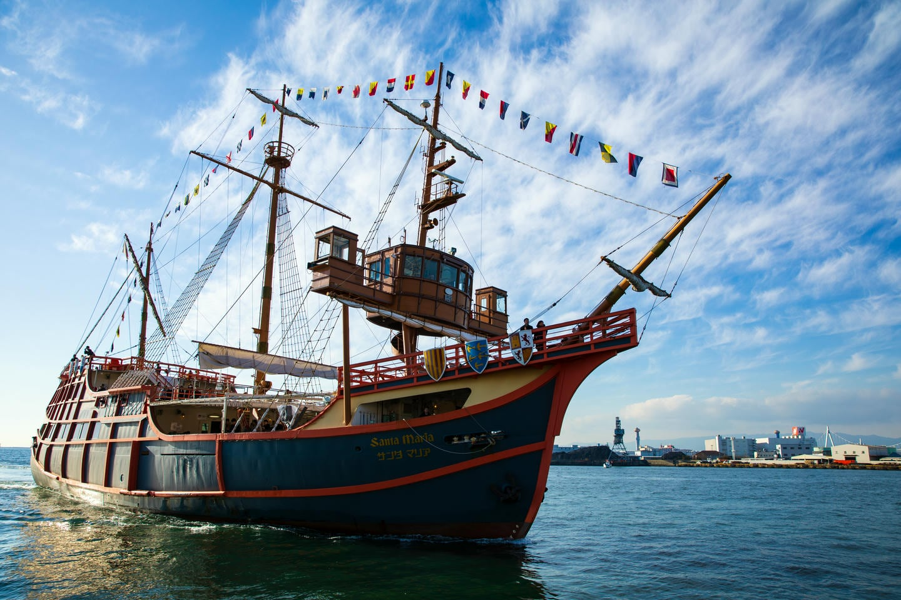
約45分。周遊パスは券売場での交換不要、直接乗り場でQR提示。公式条件は出航15分前までに到着。計画は15:30に海遊館西はとば到着を目標とする。最終16時便は未確保、天候・海況で運休。
大阪港駅までの長い徒歩を、60号〈なんば行〉または88号〈大阪駅前行〉で減らす。地下鉄大阪港で降り、中央線・ニュートラムへ。バスが遠ければ休憩し、コスモタワーの見学を短縮。
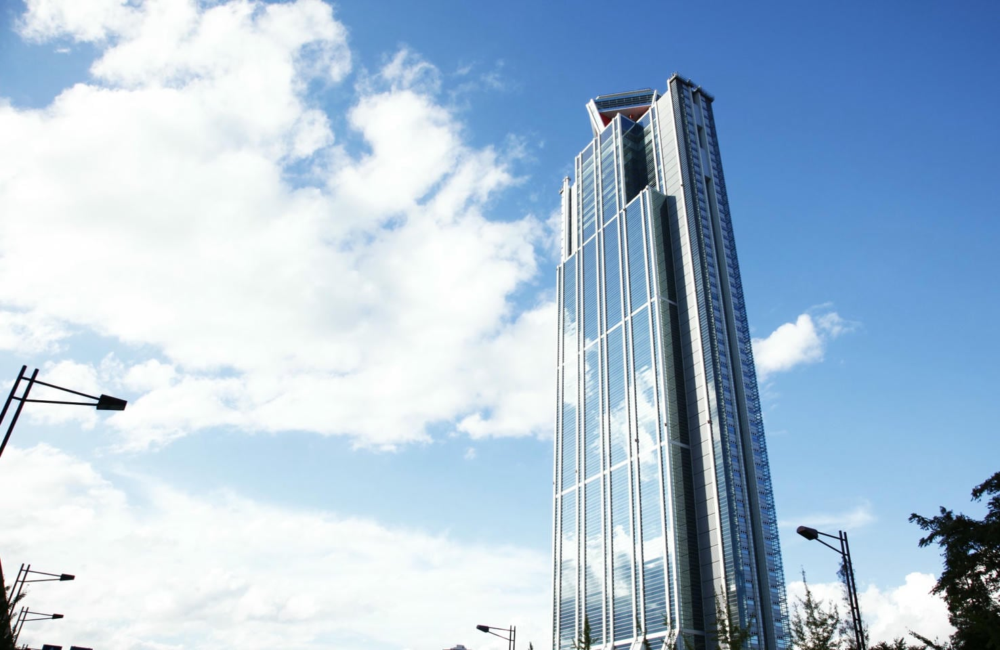
11–22時／最終21:30。夜景35分。とんぼりの指定便に間に合うよう18:50には退出し、荷物回収・チェックインの余裕を作る。
18:50にコスモタワーを出る配分。なんばで朝の荷物を回収してから宿へ。
連泊の手続き・荷物整理を済ませる。手続きが長引く場合は交換済みの便を優先して、夜景をさらに短縮。
20:20頃の到着を目標。これは計画用の余裕で、券に記載された集合時刻・案内を優先。
Google Mapsで徒歩経路 ↗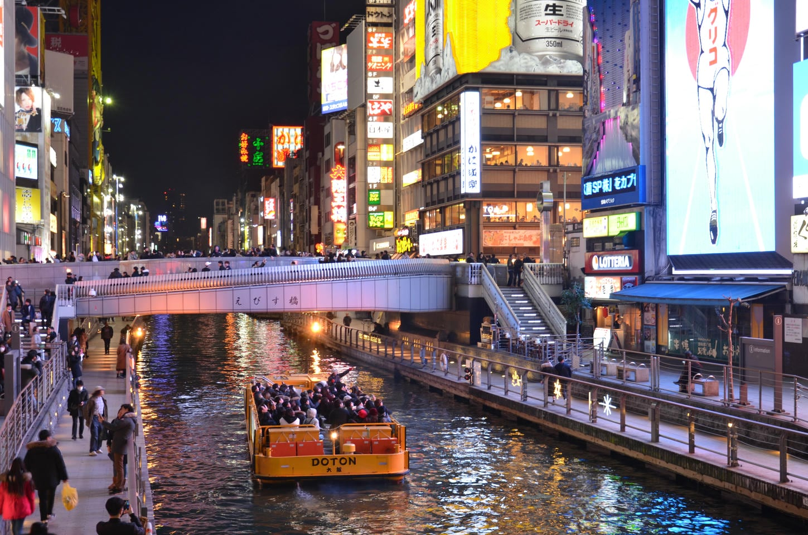
ガイド解説を楽しむ約20分。周遊パス利用は乗船当日の窓口で時間指定券に交換が必要。旅行前の予約ではない。6日昼にドン・キホーテ道頓堀店の川側入口東隣の受付で20:30便を希望して交換してからベイへ。通常11時始発なら券売場は10時開場（始発変更時は変更）。希望便は未確保、夜の便は満席になり得る。20:30が取れなければ21時便等の空きを相談。宿への戻りが遅れそうなら、交換した便を優先してコスモタワーを短縮。
近場で夜遊び。深夜外出・再入館の具体的な時刻制限は受付で確認。
0 アムザ｜宿泊拠点・概要を見る Google Maps ↗公式サイト ↗
連泊でも翌10時チェックアウトの案内あり。出発前に手続き・荷物を受付で確認。
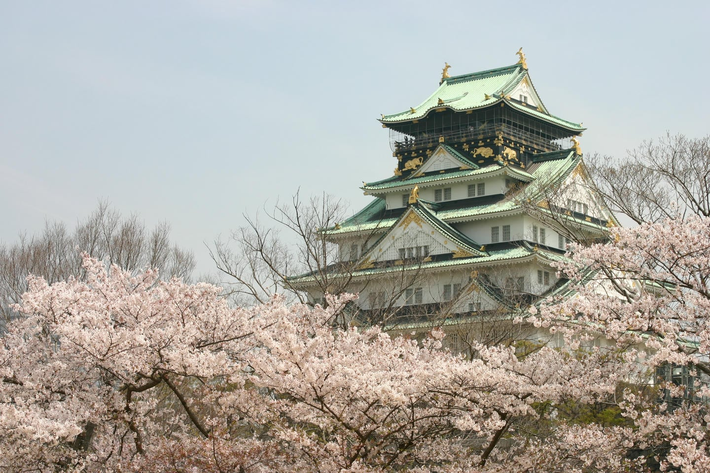
9–18時／最終17:30。駅から天守閣まで公園内を歩く時間が必要。70分は展示を絞る配分。城をじっくり読むなら他の訪問を減らす。
10:40便を希望して周遊パスQRを提示。空席がなければ後の時間を相談。
Google Mapsで徒歩経路 ↗交換できた便の出航10分前までに集合。10:40は未確保の希望時刻。
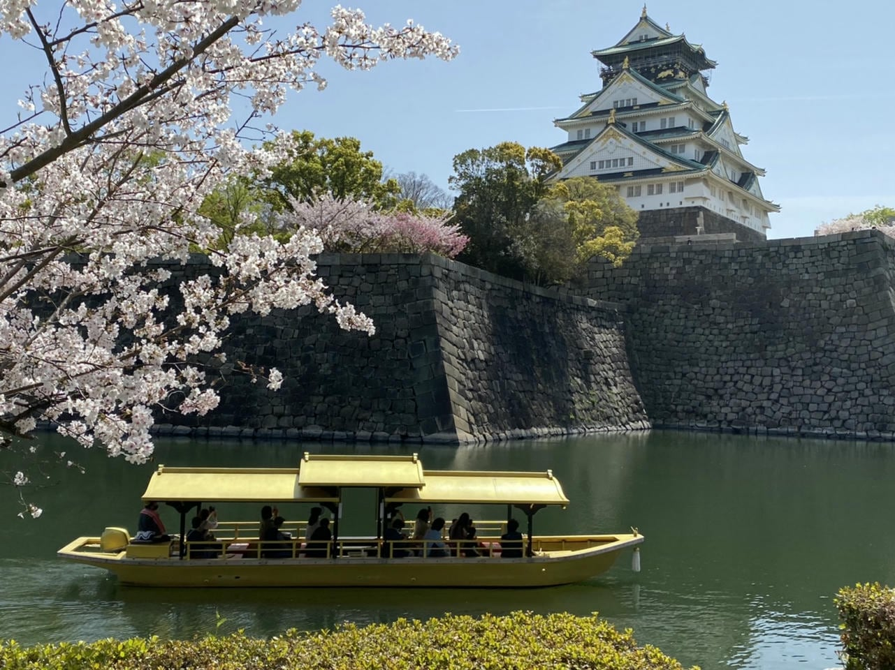
10月は10–16:30、原則10分間隔・約20分。10:10に天守閣を出て券売場へ。10:40は希望便で未確保。交換後は出航10分前までに集合。
公園内の徒歩と乗換を含め60分。
SLIDER16:15、Dive17時、展望台19:30を希望。別受付もあり、確保できた枠に合わせて順番調整。
上り坂を約20分歩く代わりに、天王寺公園前のあべの橋から62号〈大阪駅前行〉で天王寺西門前へ。通天閣から停留所までの徒歩は残る。待ち時間込み30分。
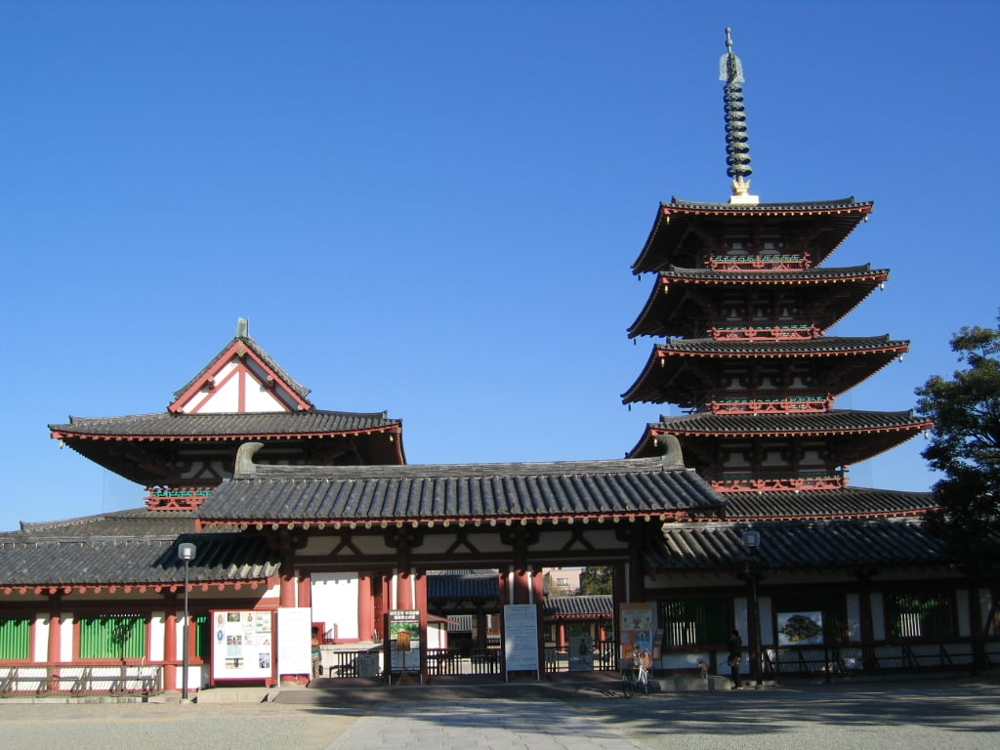
7日の周遊パスで中心伽藍へ。10月は8:30–16時。庭園はパス公式で10/1–10休園、宝物館秋季展は10/10開始。35分の短め配分。門内の外周は24時間参拝可だが、有料堂内は16時まで。
62号〈住吉車庫前行〉であべの橋へ戻り、てんしばゲートから入園。園内は見たい動物に絞り、出るときは新世界ゲートを使うとZAZAへの戻りを短くできる。
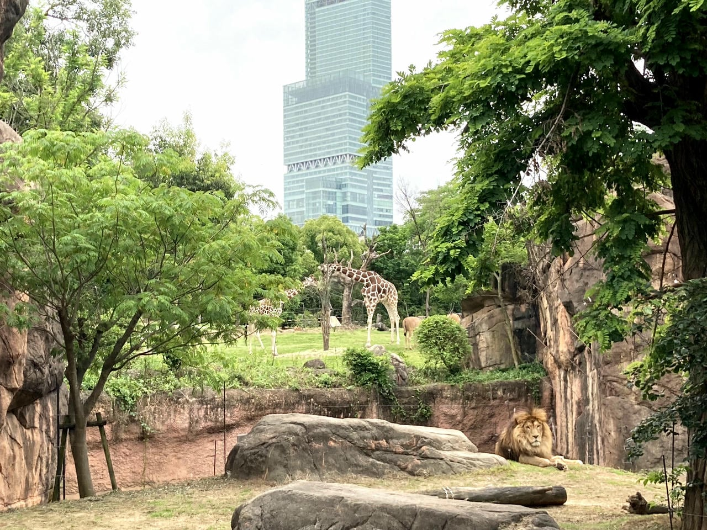
9:30–17時／最終16時。85分で主要動物を優先。てんしばゲートから入り、新世界ゲートから出てZAZAへ。15時以降見られなくなる動物がいるので、見たい動物から先に。
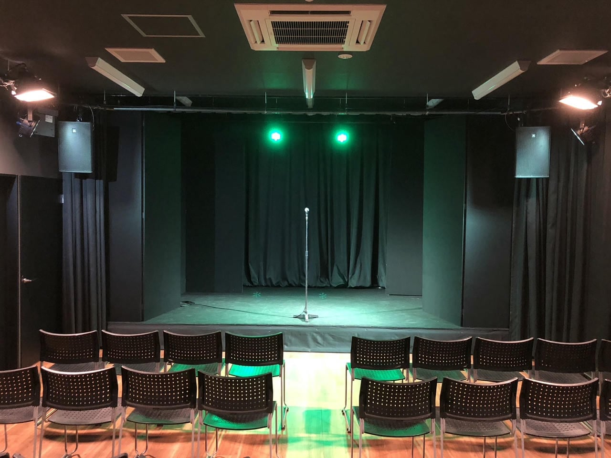
公式10月予定で7日の公演あり。15:30–16:00は最終公演で後ろにずらせない。パス対象はPOCKETSのお笑い寄席。早めに受付。
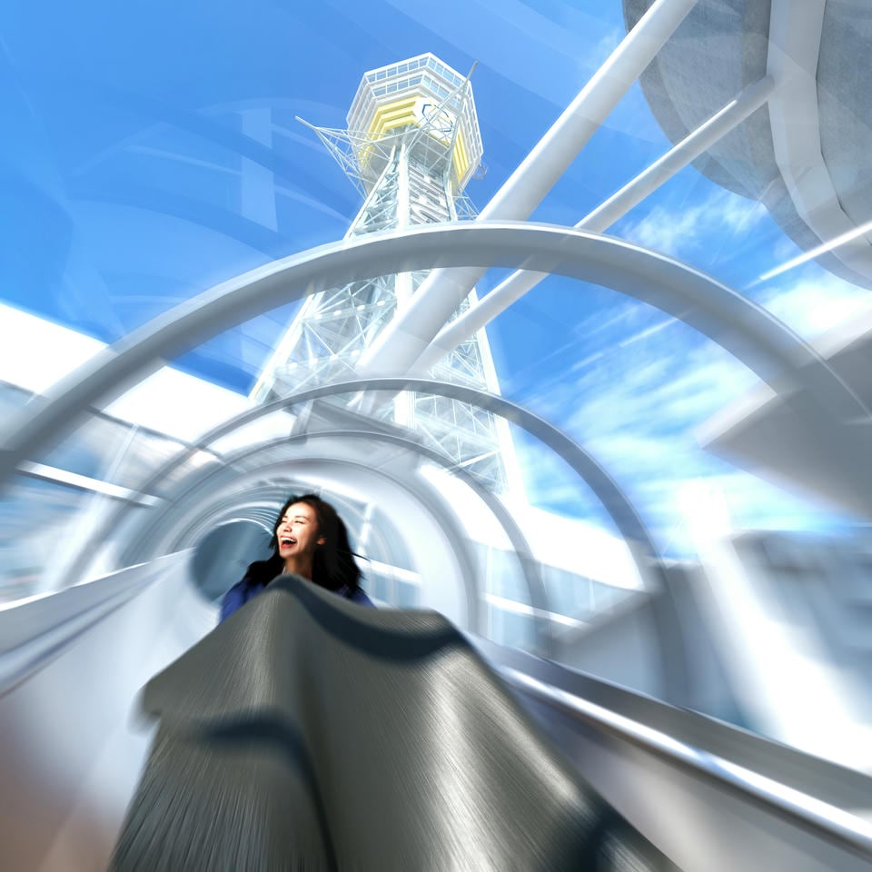
9:30–20:30／最終20:00。身長120cm以上・体重120kg未満・7〜65歳。現地時間指定の取得状況で展望台と順番調整。
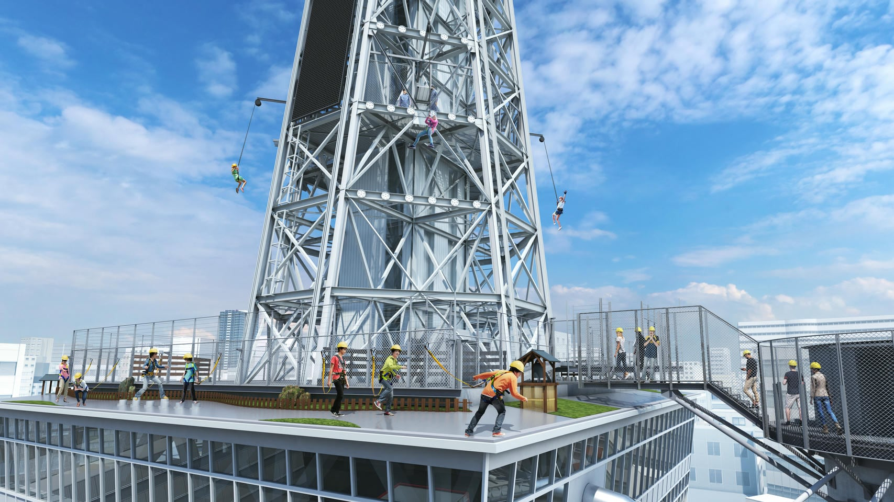
10:10–20:00／最終19:15。受付は通天閣SATELLITE。身長130cm以上・体重120kg未満・9〜65歳。パンツ＋スニーカー。時間枠と天候次第で実施できない可能性。 酒気帯び不可。飲酒は体験後へ。パンツ／シューズ貸出500円、スマホ持込500円は任意の追加料金（支払方法未確認）。
体験後なら飲酒の予定を入れられる。19:30は希望枠。
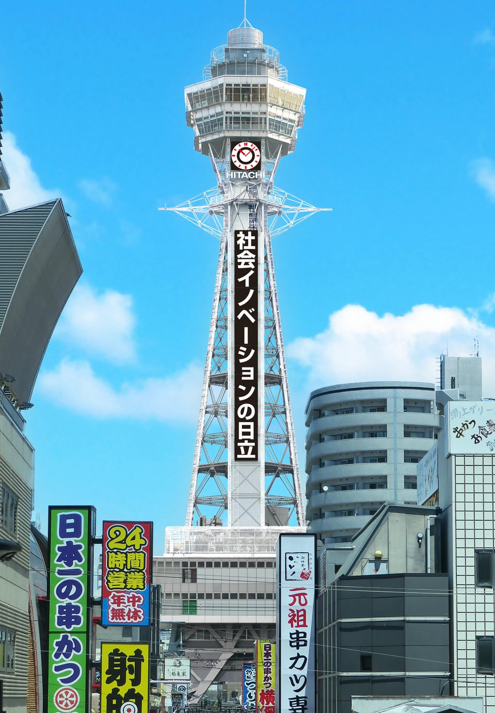
夜景を19:30–20:30に。9–21:45／最終21:15。12時にSLIDER・Dive&Walkとあわせ当日の時間指定券を交換する想定。希望枠は未確保。特別屋外展望台等は別料金。
地下鉄で宿周辺へ。以後は法善寺横丁・道頓堀などを当日判断。
0 アムザ｜宿泊拠点・概要を見る Google Maps ↗公式サイト ↗
荷物を持って出発。館の100円返却式ロッカー／大型荷物は受付相談。収納不可なら長居駅等のロッカーを利用（費用別）。アムザには戻らない経路。
午後の常設展3時間に備える。
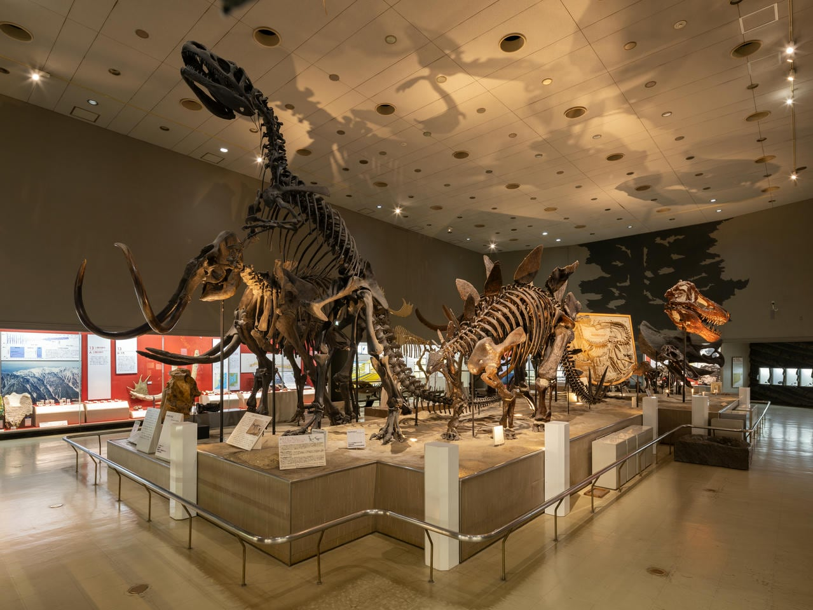
常設展に3時間＋午前に大絶滅展2時間。9:30–17時／最終16:30。特別展券で同日常設展も観覧できるため、常設300円を重ねて買わない。長居駅3号出口から約800m。
図録や気になった本を見る。館・駅のロッカーから荷物を回収。梅田の店巡りを全部回る場合は16時頃に博物館を出る。
長居駅までの徒歩約800mと電車待ちを含む60分の枠。御堂筋線：長居 M26 → 梅田 M16、乗換なし。梅田駅からHEP FIVEへ。
HEP FIVE 4階。11–21時。店内はミッキーが監督を務める映画の撮影所がテーマ。名刺の有無・配布条件はキャストに確認。
大阪駅側へ移動。時間に余裕があればヨドバシ梅田5階のミニカー・ホビー、カメラ売場へ立ち寄る。寄った分は蔦屋の時間を短縮し、18:55の出発を守る。
ルクア イーレ5階。10:30–20:30。白を基調としたプリンセスのお城・バラのモチーフ。名刺の有無・配布条件はキャストに確認。
旧ヤム鐵道（B2F・11–21時、公式予算1,000〜1,999円）はスパイスカレーの候補。列が長ければフードホールの別店へ。食べ放題は組み込まない。18:55に梅田を出発。
御堂筋線：梅田 M16 → 新大阪 M13。地下鉄から新幹線改札への徒歩・乗車券購入の時間も含む。
両方、新幹線改札内の店で購入。りくろーは21時、551チルド専門店も21時閉店。改札外のりくろー中央口店は20時まで。行列・売り切れに備え30分確保。551では自宅の冷蔵庫に入れるまでの時間を伝え、保冷を相談。
20:15発 → 東京22:42着。予定のりば27番（当日の案内を優先）。自由席なら1・2号車の乗車位置へ。遅れても始発のひかり666号20:21発 → 東京23:06着が予備候補。
東京22:42着後、中央線へ。23:01発・快速豊田行 → 国分寺23:47着を目安にする。東京から国分寺直通の終電23:56の5本前は23:32発・国分寺翌0:09着。23:32を帰宅の締切として確保。
なんば・日本橋の間にある、男性専用のカプセルホテル＆スパ・サウナ。道頓堀観光後に歩いて戻りやすい場所です。所在地：大阪市中央区千日前2-9-17。フロントは7F。電話：06-6633-1000。
Osaka Metroなんば駅／日本橋駅から、なんばウォークB21出口すぐ。南海難波駅から公式案内で徒歩6分、JR難波駅から徒歩10分。毎朝の出発駅は、その日の経路に合わせてなんば・日本橋を使い分けます。
チェックイン12:00〜、カプセル利用15:00〜、チェックアウト翌10:00。カプセル宿泊は外出可能。連泊でも翌10時チェックアウトの案内があります。深夜の外出・再入館に時刻制限があるかは公式で確認できませんでした。初回チェックインは深夜0時までに来館しないとキャンセルとなる予約案内（オンラインカード決済除く）がありますが、これは再入館の門限とは別です。到着時に「深夜1〜3時のコンビニ外出は可能か」を確認してください。
滞在中は大きな荷物用ロッカー・一時預かりの案内があります。チェックイン前／チェックアウト後の預かり、連泊外出中の継続預かりは未確認。6日朝は駅ロッカー等を想定。8日は荷物を持って長居へ行き、そのまま新大阪へ向かいます。滞在中の大型荷物用ロッカーは無料の案内あり。連泊時の10〜12時の荷物扱いは受付で確認してください。
スタンダード3,200円〜、快眠3,500円〜、デラックス4,200円〜。いずれもスパ・サウナ込みの基本料金。10/6・7の実売額・空室は未確認で、旅の費用集計には宿泊代を含めていません。
スパ・サウナは12:00〜翌10:00。10:00〜12:00は利用できません。タオル・館内着・歯ブラシ等のアメニティあり。朝食は6:00〜9:30（LO9:15）、平日の食堂は12:00〜翌3:00（LO2:30）。食事代は別です。
男性専用。宿泊は18歳以上。刺青・タトゥーはシール等を含め利用不可。予約プランのチェックイン期限を確認してください。
時間指定券が必要な施設の時刻は希望枠です。券を受け取るまで確定しません。サンタマリアは直接QRを提示する別の方式です。とんぼりは通常の有料WEB予約もありますが、今回の周遊パス無料利用は当日の現地交換です。
守るのは6日のサンタマリア16時（計画15:30到着・公式は15分前まで）、7日のZAZA15:30（最終公演）、8日の自然史常設3時間＋特別展2時間。ロールス・ロイスは見学条件未確認の候補なので、入れなければ企業家ミュージアム・昼食の余裕に回します。7日の動物園は90分、昼は軽食の配分です。
通天閣3施設の時間指定は7日12時に現地で取得する想定。希望枠は未確保で、特にDive&WalkはSATELLITEの別受付。枠が合わなければ順番変更・一部見送りが必要です。夜景は19:30の展望台へ。体験前の飲酒は避けます。とんぼりは6日昼に夜便の券を交換しておき、再度の来場時間を守ります。6日の帰着が遅れる場合はコスモタワーを短縮。
夜は6日のとんぼり20:30、7日の通天閣19:30〜20:30を確保する提案。以後は宿から歩ける法善寺横丁・道頓堀へ。梅田スカイビルのパス無料入場は15時までなので朝のまま。四天王寺の門内は24時間参拝可でも有料堂内は16時までです。移動は大阪シティバス・Metro・ニュートラム・JR阪和線と短い徒歩を組み合わせます。6・7日の市バス8・41・60・62・72・88号は周遊パス対象。60・88号〈天保山行〉の地下鉄大阪港→天保山ハーバービレッジも対象。8日は交通費を個別払い。バスは後ろから乗り、降車時にパスのQRコードを運賃箱付近の読み取り機にかざします。
8日は大絶滅展10–12時、昼食、常設展12:45–15:45。特別展券で当日の常設展も入れる。混雑して延びたら梅田の本・カメラ売場を短縮し、ディズニーストアと19:20新大阪到着を優先する。
博物館ロッカーを使うなら：100円硬貨1枚。博物館のロッカーは100円返却式。大型荷物は受付相談の公式案内あり（収納・預かり条件は当日確認）。公式の荷物案内。6・7日の対象15施設はパスの範囲なら入場追加支払いなし。物販・飲食・追加展望台・ロッカー等は別です。Dive&Walkの貸出服／靴500円、スマホ持込500円は任意で、現地の支払方法は未確認。大阪城の荷物預かり100円／個も任意で、現金限定かは未確認です。大阪城の案内
8日はパス期限外。なんば → 長居 → 梅田 → 新大阪をICで個別乗車。荷物を館・長居で回収して進む経路。アムザに荷物を残している場合は回収の寄り道が必要。
りくろー改札内店のあらかじめ焼き上げたチーズケーキは、10月の持ち歩き目安5時間。19:20購入なら翌0:20までが目安。帰宅後は冷蔵。公式の保存案内
パスでの入場は15時まで。朝一番に50分。梅田駅から長く歩かず、41号の大淀中一丁目から短い徒歩で向かう。
確認元の公式情報 ↗淀屋橋・道修町4-1-1。火曜10–18時、水曜定休。2025年移転時の公式発表は展示4台のスペース＋色・革・木材などのビスポーク展示。見学のみの来店条件・予約要否・当日の展示車は未確認。店頭で相談し、見学できなければ次へ。周遊パス対象外。
確認元の公式情報 ↗10–17時／最終16:30。6日の周遊パスで入館。企業家の展示に50分。8日の特別展を確保するため6日へ移動。
確認元の公式情報 ↗約45分。周遊パスは券売場での交換不要、直接乗り場でQR提示。公式条件は出航15分前までに到着。計画は15:30に海遊館西はとば到着を目標とする。最終16時便は未確保、天候・海況で運休。
確認元の公式情報 ↗11–22時／最終21:30。夜景35分。とんぼりの指定便に間に合うよう18:50には退出し、荷物回収・チェックインの余裕を作る。
確認元の公式情報 ↗ガイド解説を楽しむ約20分。周遊パス利用は乗船当日の窓口で時間指定券に交換が必要。旅行前の予約ではない。6日昼にドン・キホーテ道頓堀店の川側入口東隣の受付で20:30便を希望して交換してからベイへ。通常11時始発なら券売場は10時開場（始発変更時は変更）。希望便は未確保、夜の便は満席になり得る。20:30が取れなければ21時便等の空きを相談。宿への戻りが遅れそうなら、交換した便を優先してコスモタワーを短縮。
確認元の公式情報 ↗9–18時／最終17:30。駅から天守閣まで公園内を歩く時間が必要。70分は展示を絞る配分。城をじっくり読むなら他の訪問を減らす。
確認元の公式情報 ↗10月は10–16:30、原則10分間隔・約20分。10:10に天守閣を出て券売場へ。10:40は希望便で未確保。交換後は出航10分前までに集合。
確認元の公式情報 ↗7日の周遊パスで中心伽藍へ。10月は8:30–16時。庭園はパス公式で10/1–10休園、宝物館秋季展は10/10開始。35分の短め配分。門内の外周は24時間参拝可だが、有料堂内は16時まで。
確認元の公式情報 ↗9:30–17時／最終16時。85分で主要動物を優先。てんしばゲートから入り、新世界ゲートから出てZAZAへ。15時以降見られなくなる動物がいるので、見たい動物から先に。
確認元の公式情報 ↗公式10月予定で7日の公演あり。15:30–16:00は最終公演で後ろにずらせない。パス対象はPOCKETSのお笑い寄席。早めに受付。
確認元の公式情報 ↗9:30–20:30／最終20:00。身長120cm以上・体重120kg未満・7〜65歳。現地時間指定の取得状況で展望台と順番調整。
確認元の公式情報 ↗10:10–20:00／最終19:15。受付は通天閣SATELLITE。身長130cm以上・体重120kg未満・9〜65歳。パンツ＋スニーカー。時間枠と天候次第で実施できない可能性。 酒気帯び不可。飲酒は体験後へ。パンツ／シューズ貸出500円、スマホ持込500円は任意の追加料金（支払方法未確認）。
確認元の公式情報 ↗夜景を19:30–20:30に。9–21:45／最終21:15。12時にSLIDER・Dive&Walkとあわせ当日の時間指定券を交換する想定。希望枠は未確保。特別屋外展望台等は別料金。
確認元の公式情報 ↗常設展に3時間＋午前に大絶滅展2時間。9:30–17時／最終16:30。特別展券で同日常設展も観覧できるため、常設300円を重ねて買わない。長居駅3号出口から約800m。
確認元の公式情報 ↗HEP FIVE 4階。11–21時。店内はミッキーが監督を務める映画の撮影所がテーマ。名刺の有無・配布条件はキャストに確認。
ルクア イーレ5階。10:30–20:30。白を基調としたプリンセスのお城・バラのモチーフ。名刺の有無・配布条件はキャストに確認。
ルクア イーレ9階。8:30–21時。自然史・進化、空海・仏教、車・写真の棚を探す。特定の本の在庫は店頭確認。